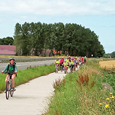
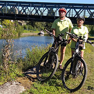
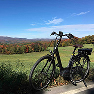
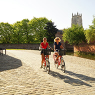
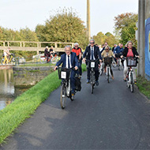
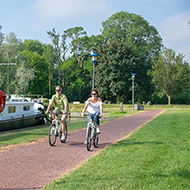

22,7 Km
Voie verte / Stabilisé
Calais > Ardres

27,8 Km
En projet (2020)
Ardres > Watten

11,2 Km
En projet (2020)
Watten > Saint-Omer

21 Km
Voie verte / Enrobé - Stabilisé
Saint-Omer > Aire-sur-la-Lys

13,6 Km
Voie verte / Enrobé - Stabilisé
Aire-sur-la-Lys > Saint-Venant

17,5 Km
En projet (2020)
Saint-Venant > Béthune

20,2 Km
Voie verte / Enrobé - Stabilisé
Béthune > Parc d'Olhain (Maisnil-lès-Ruitz)
Cette section de l'EuroVélo-route n° 5 est en partie aménagée mais n’est pas encore jalonnée. Elle permet de relier Béthune au parc d’Olhain au sud de Bruay-la-Bussière[...]
15,4 Km
Voie verte / Enrobé
Parc d'Olhain (Maisnil-lès-Ruitz) > Angres
5,2 Km
Voie verte / Enrobé
Angres > Lens
24,5 Km
Voie verte / Enrobé - Stabilisé
Lens > Don
22,8 Km
Voie verte / Enrobé - Stabilisé
Don > Lille (Marquette-lez-Lille)

32,7 Km